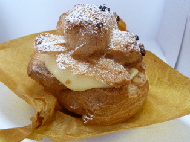
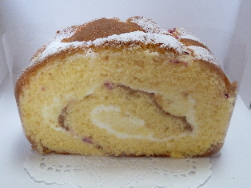
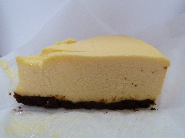

ミエルのシュームリーム
2011/09/18
米子市米原にあるケーキ屋さんミエルに行きました。

私が一番いいな！って思ったのはシュークリークです。
なろやかな甘さのクリームが沢山入っていました。
見た目もおしゃれです。これだったらお皿に乗せて食べてもいいですね。

次にいいなって思ったのは、米粉とベリーのロールケーキです。
スポンジに砂糖味が効いていて、素朴な甘さがいいなって思いました。

これはちょっと変わったチーズケーキでした。
どっしりと質量感があるんですが、チーズの味も濃くないし、甘さも控えめで、不思議な味付けだなって思いました。なんか新しいですね。